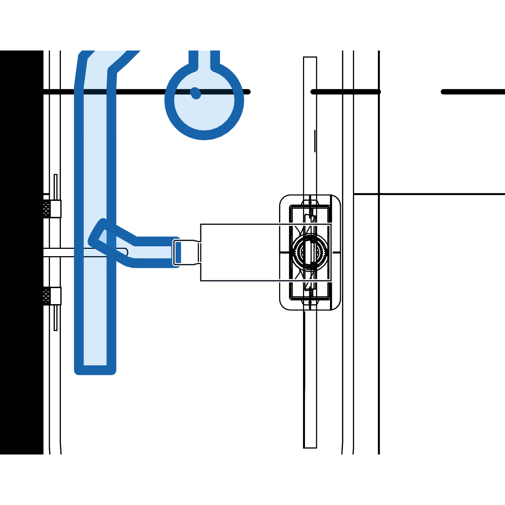
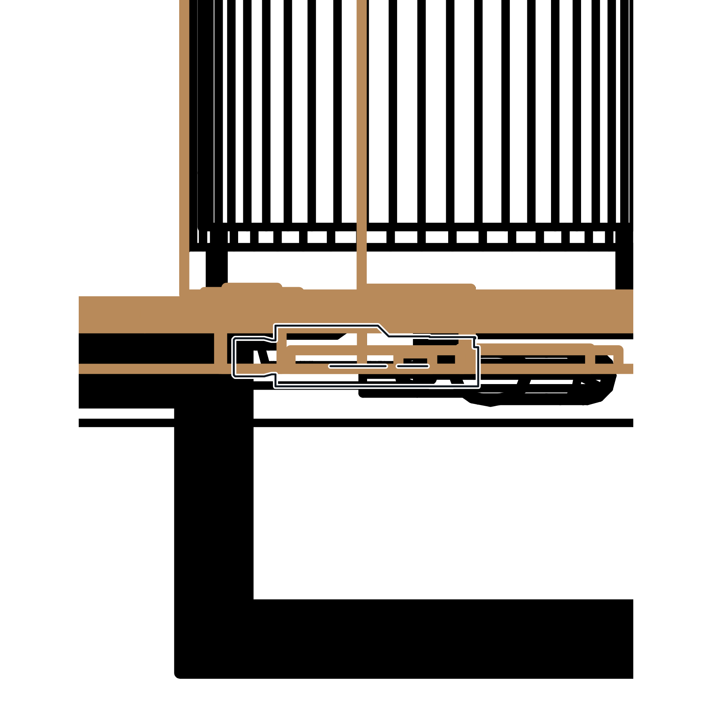
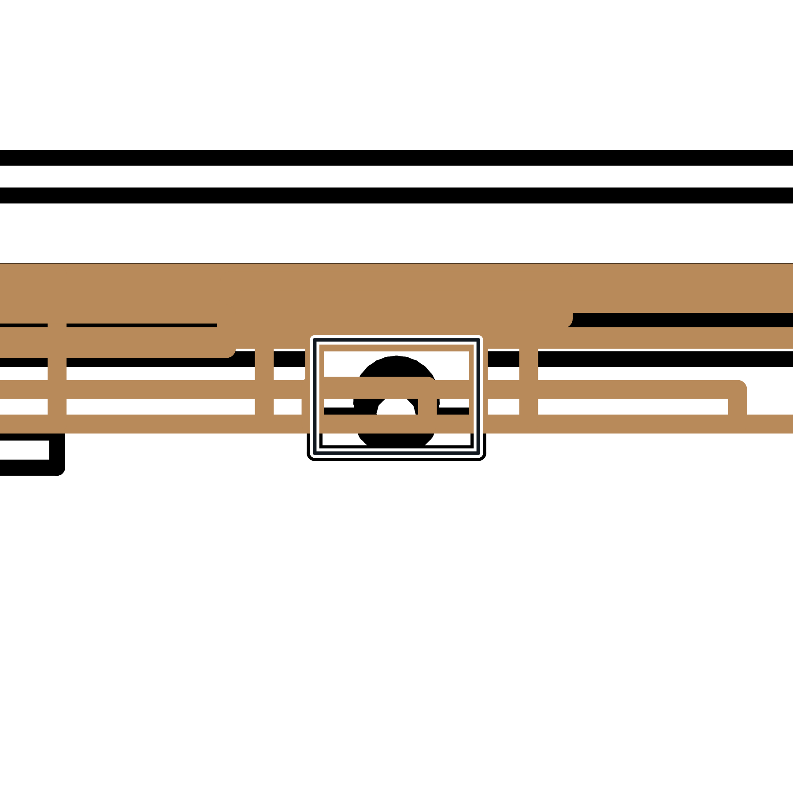
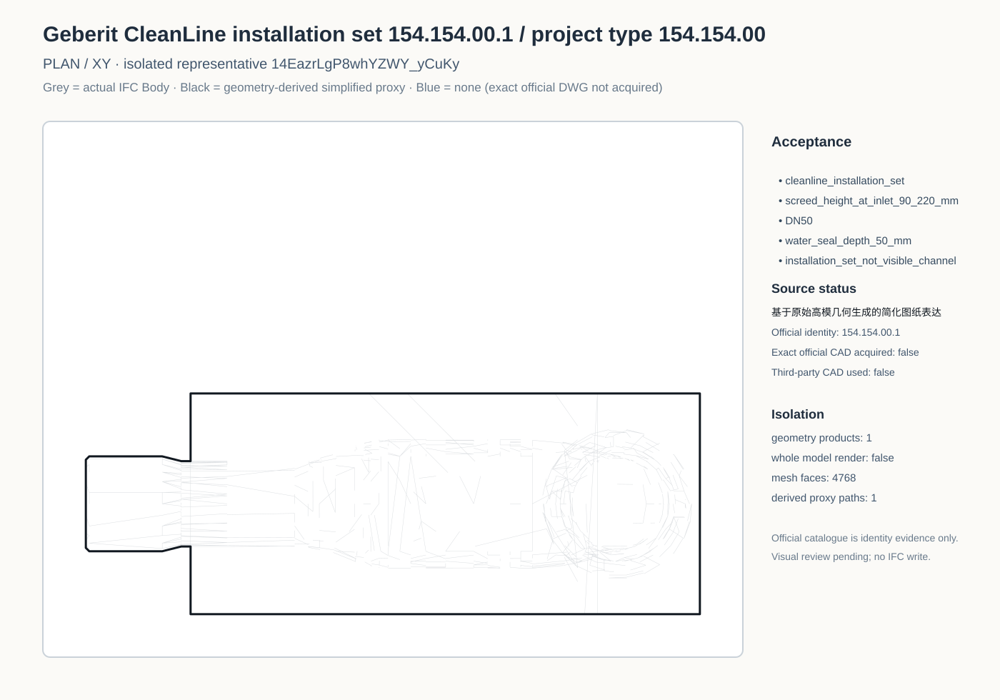
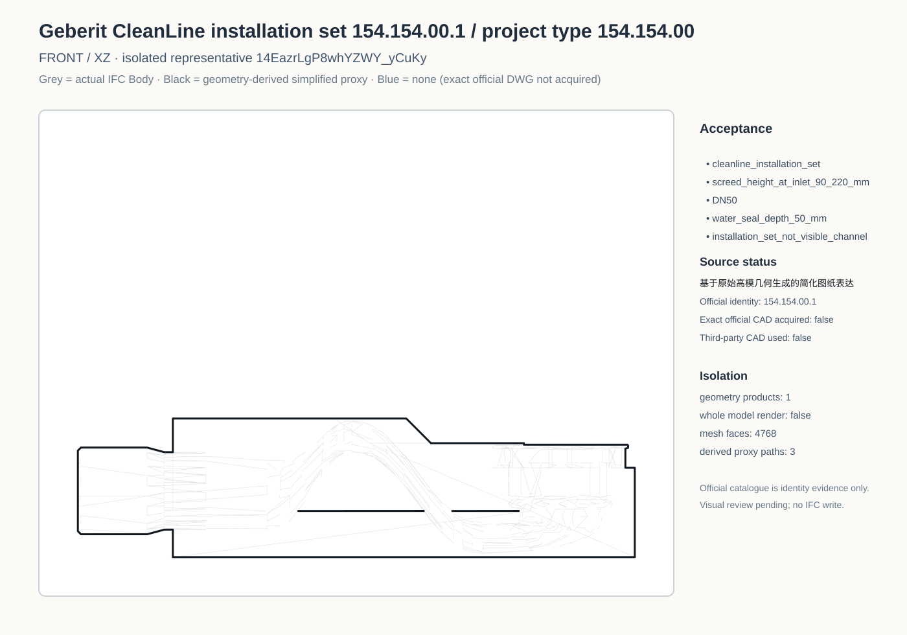
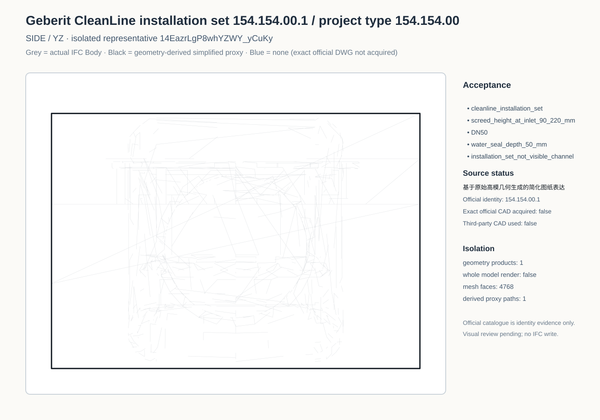
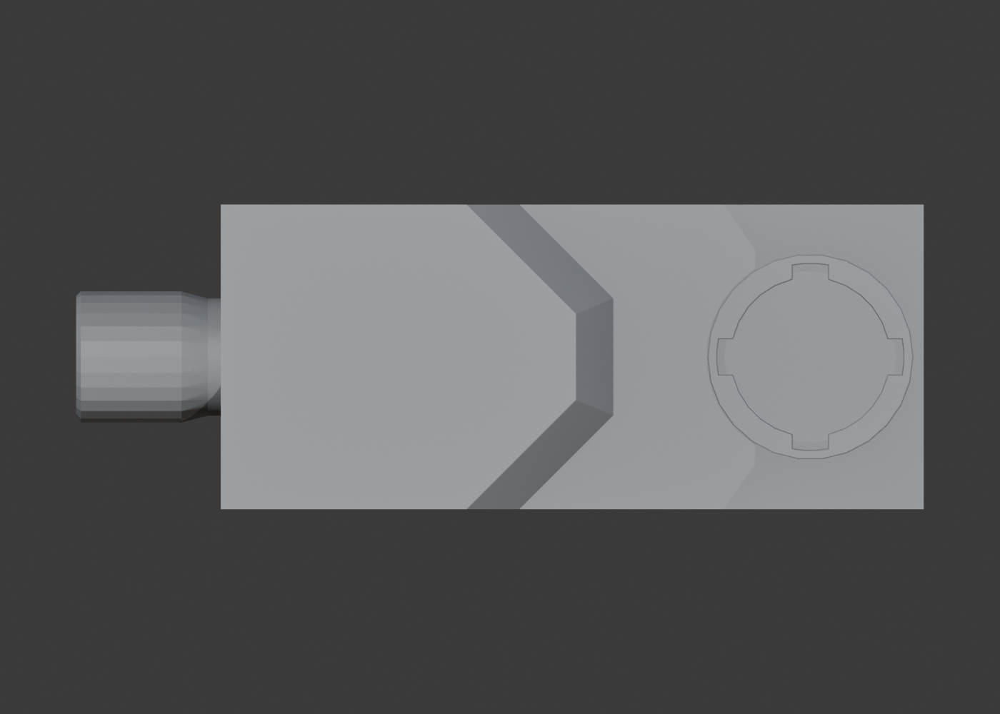
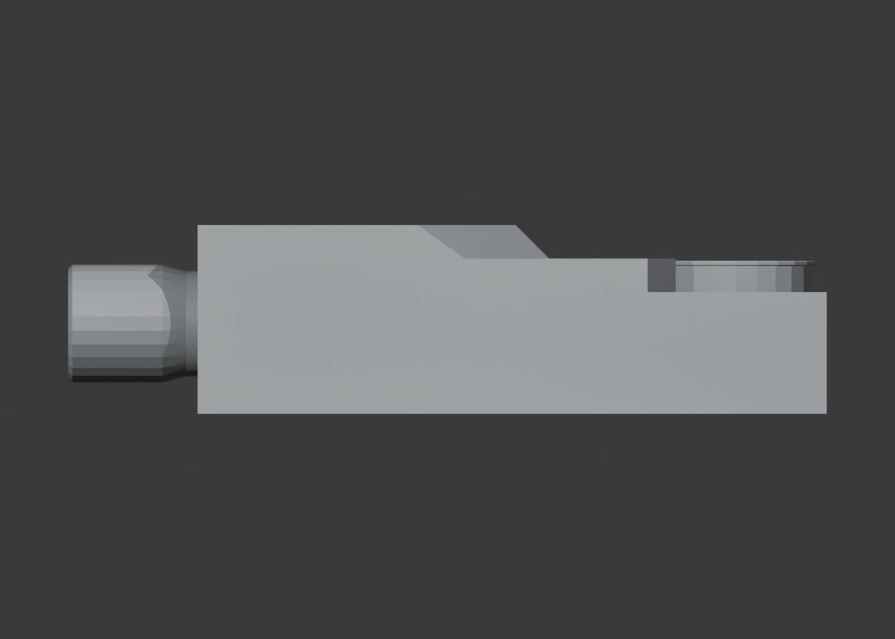
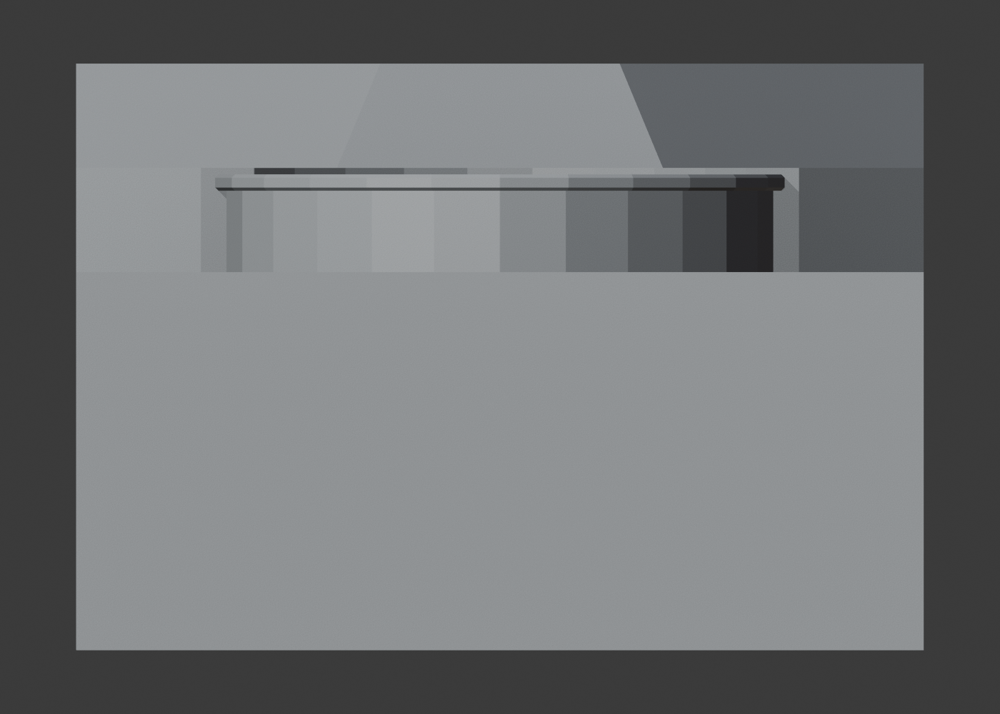
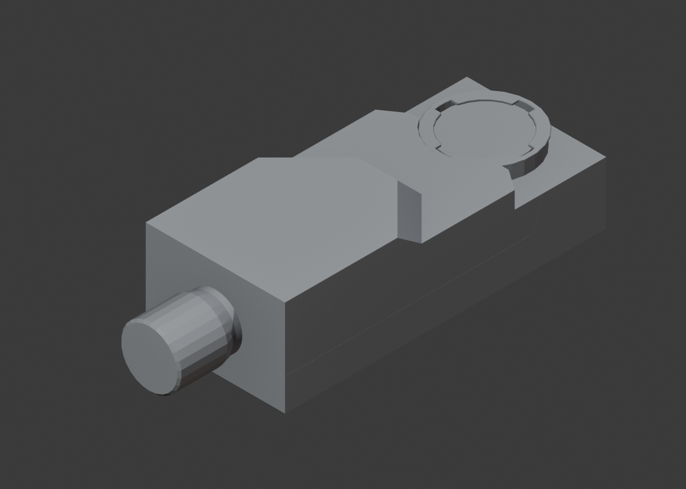

Sanitary plan

Black line = simplified drawing representation derived from the original high-poly geometry. The exact official page publishes vector EPS technical views but the article entry has cadDrawings undefined and the A/G/L/P native-DWG URLs return 404, so no blue CAD line is shown. The anonymous article API currently returns 401 and is recorded only as an access-status fact, not as proof that CAD does not exist.










7a50b87e8f48a7c2bfbaa9f1dabdfca7155fa684b2325c66aa1ae15c8ab0a25c